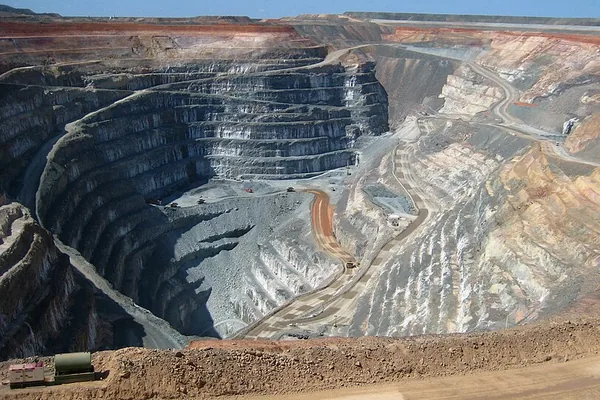
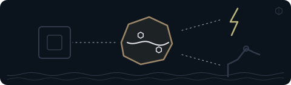
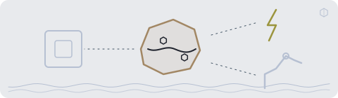

De … største af temaets … selskaberTemaets … selskaber
Tryk på et selskab for at se mere om det.
Vis alle … selskaber i temaet
Andele i PMINDI, den udgave af fonden, der udbetaler udbytte, pr. … (fondens data).

Et af de … temaer i NewDeal Invest
Hvor i vejen fra råstof til materiale arbejder selskabet?
Det er ikke nok at vide, at teknologien bruger kobber, magneter eller batterimaterialer. Se også, hvor i forarbejdningen selskabet arbejder, og om der allerede er produktion eller stadig et projekt.

… %
af PMINDI er placeret i temaet Råstoffer.
Andele i PMINDI, den udgave af fonden, der udbetaler udbytte, pr. … (fondens data).
De … temaer efter størrelse. Råstoffer er nr. ….
Det har vi skrevet
Ordret uddrag af NewDeal Invests egne ugebreve og indlæg om temaet, med dato og link til hele teksten. Det er ikke en anbefaling.
»If I’m analyzing copper, for instance, it’s no longer enough just to ask how much copper the world will need, how much is being produced, and whether there will be a deficit or a surplus. I also have to understand where the copper comes from, who controls the mines, who refines it, and which countries are willing to depend on which others.«
På dansk (vores oversættelse): »Hvis jeg for eksempel analyserer kobber, er det ikke længere nok bare at spørge, hvor meget kobber verden får brug for, hvor meget der bliver produceret, og om der bliver underskud eller overskud. Jeg skal også forstå, hvor kobberet kommer fra, hvem der kontrollerer minerne, hvem der raffinerer det, og hvilke lande der er villige til at være afhængige af hvilke andre.«
Læs hele teksten på Substack (åbner i nyt vindue)Læs hele teksten på bloggen (åbner i nyt vindue)»Elektrificering, AI og reindustrialisering kræver enorme mængder af solceller, batterier, kabler, elmotorer, transformere, sensorer, datacentre. Det betyder strukturel efterspørgsel efter kobber, sølv, aluminium og en lang række kritiske materialer.«
Grundstofkortet
Tallet øverst til venstre er antal selskaber. Fyldet nedefra viser andelen af fonden. Tryk på et felt for at se selskaberne.
Sjældne jordarter er en gruppe grundstoffer, der ikke er specielt sjældne, men svære at skille fra hinanden. De bruges mest til magneter, fx i elmotorer. I feltet er der både selskaber med miner, selskaber, der skiller stofferne ad, og et selskab, der laver selve magneterne.
Nd er symbolet for neodym, én af de sjældne jordarter. NdPr er neodym og praseodym, to sjældne jordarter, der bruges i magneter.
Tryk på et selskab for at se, hvad det laver.
Kobber leder strøm og varme godt. Tre af de otte er stadig projekter i USA, to af dem i Alaska.
Tryk på et selskab for at se, hvad det laver.
Det eneste felt uden mine og uden grundstofsymbol. Her bliver materialet lavet på fabrikker: kølemidler, hvidt farvepigment (titandioxid), lim, belægninger og særlige plasttyper. Alle fem er i drift.
Ét af dem, Solstice Advanced Materials, laver også materialer til chipfremstilling. Om chipfremstilling kan du læse på siden Chips og halvledere.
Tryk på et selskab for at se, hvad det laver.
Guld og sølv er ædelmetaller. De seks selskaber bryder dem i miner, og alle er i drift. Sølv bruges også i elektronik og solceller. Ellers siger feltet mest om metallerne selv.
Tryk på et selskab for at se, hvad det laver.
Antimon (Sb), niobium (Nb) og wolfram (W). Et råstof kaldes kritisk, når det er vigtigt, og forsyningen kan være usikker. To af de fire er projekter.
Tryk på et selskab for at se, hvad det laver.
Lithium er et metal, som især bruges i batterier. Feltet rummer også et selskab, der genbruger gamle batterier, og et, der vil hente metalklumper op fra havbunden. Tre af de seks er projekter.
Tryk på et selskab for at se, hvad det laver.
Feltet Nd, set nærmere
Videoen fra Reuters forklarer, hvad stofferne er, hvad de bruges til, og hvorfor de er svære at skille fra hinanden.
Se efter: Handler det om en forekomst, et projekt eller materiale, der allerede bliver produceret?
Selskabets egen video
MP Materials er et af fondens selskaber. I videoen viser selskabet selv, hvordan malm fra minen Mountain Pass bliver til magneter. Videoen er fra 2023 og er selskabets egen fremstilling, ikke fondens.
Se efter: Handler det om en forekomst, et projekt eller materiale, der allerede bliver produceret?

Set udefra
Her er udvalgte opslag og videoer fra medier, myndigheder og andre. De er ikke fondens holdning. „Kort fortalt“ er vores danske gengivelse. Opslaget hentes først fra X, når du trykker på „Vis opslaget“.
Se efter: Handler det om en forekomst, et projekt eller materiale, der allerede bliver produceret?
Delt af Mads Christiansen fra teamet bag NewDeal Invest
Bloomberg @business · på engelsk
Kort fortalt Mødet skulle ifølge mediet gøre USA mindre afhængigt af forsyningskæder, som Kina dominerer.
Hvad skal du lægge mærke til? Læs opslaget sammen med afsnittet om grundstofkortet. Handler det om en forekomst, et projekt eller materiale, der allerede bliver produceret?
Delt af Mads Christiansen fra teamet bag NewDeal Invest
Elon Musk @elonmusk · på engelsk
Kort fortalt Elon Musk, topchef i Tesla, skriver, at motoren i Cybercab, Teslas selvkørende taxa, ikke bruger sjældne jordartsmetaller, men har samme rækkevidde. Ifølge ham var det meget svært at opnå. Det er Teslas egen oplysning.
Hvad skal du lægge mærke til? Læs opslaget sammen med afsnittet om sjældne jordarter. Handler det om en forekomst, et projekt eller materiale, der allerede bliver produceret?
Reuters @Reuters · på engelsk
Kort fortalt Ifølge Reuters har bilproducenten General Motors (GM) opsagt en aftale med en ny amerikansk fabrik til magneter af sjældne jordarter. Reuters skriver, at oplysningen stammer fra dokumenter.
Hvad skal du lægge mærke til? Læs opslaget sammen med afsnittet om sjældne jordarter. Handler det om en forekomst, et projekt eller materiale, der allerede bliver produceret?
MINING.COM @mining · på engelsk
Kort fortalt Ifølge MINING.COM har Ghanas præsident John Mahama oplyst, at landet planlægger at forbyde eksport af uforarbejdede mineraler som mangan, bauxit, jern og lithium senest i 2030. Mediet skriver, at forbuddet skal indføres gradvist med lovgivning og krav om forarbejdning i landet.
Hvad skal du lægge mærke til? Læs opslaget sammen med afsnittet om risikoen få lande. Handler det om en forekomst, et projekt eller materiale, der allerede bliver produceret?
Opslagene er udvalgt af teamet bag NewDeal Invest. Afsenderne og de nævnte selskaber står ikke bag denne side, og opslagene er ikke fondens vurdering.
Tryk på et selskab for at se mere om det.
Andele i PMINDI, den udgave af fonden, der udbetaler udbytte, pr. … (fondens data).
Udvalgte offentlige opslag om selskaberne i temaet. Opslagene er andres og ikke NewDeal Invests holdning.
Henter opslag …
VIDEOER OG OPSLAG
NEWDEAL INVEST · 2026-09-21
Om Råstoffer · starter ved 3:39
Se på YouTube ↗X · 2026-10-27
X · 2026-09-28
Videre


Materialerne bliver til chips, kabler, batterier og motorer, som har deres egne temaer i fonden.
Fire af selskaberne laver også noget, der hører til et andet tema: Energy Fuels (Energi og elnet), Chemours (Datacentre), Solstice Advanced Materials (Chips og halvledere) og MP Materials (Robotter & fysisk AI). I fondens opdeling tælles de kun med her.
Tegninger, ikoner og videoplakater. Illustration: NewDeal Invest. Fotoet af de sjældne jordarter: Peggy Greb, USDA Agricultural Research Service, offentligt domæne, Wikimedia Commons (åbner i nyt vindue) (beskåret).
Videoerne er fra Reuters, British Geological Survey og MP Materials og vises fra YouTube, først når du trykker på dem. Opslagene er fra X. Logoer tilhører de enkelte selskaber og viser kun, hvilke selskaber fonden ejer aktier i. Afsenderne og selskaberne står ikke bag denne side, og der er intet samarbejde med dem.